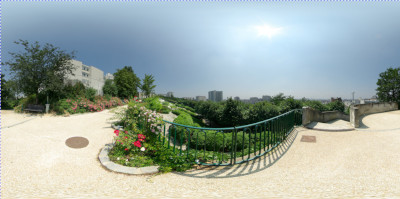
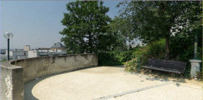
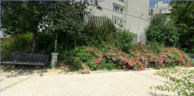

This filter converts a 360° x 180° image, also known as equirectangular image, into a panorama.
![[Nota]](images/note.png)
|
Nota |
|---|---|
|
These options are the same as Seção 13.6, “Little Planet” options. |

Click and drag to pan.
Shift + Click and drag to rotate.
Ctrl + Click and drag to pan with a constrained axis.
Alt + Click and drag to zoom.
![[Dica]](images/tip.png)
|
Dica |
|---|---|
|
You can find free equirectangular images at https://commons.wikimedia.org/wiki/Category:360%C2%B0_panoramas_with_equirectangular_projection. |
Of course, you can get only a part of the original image in your panorama. The first thing you have to do is creating a new image with the size of your future panorama. Then, open the original image.

Parc_de_Belleville,_Paris_June_2007.jpg by Alexandre Duret-Lutz under CC by-sa 4.0
GIMP opened this 4000×2000 pixels original image in a 1000×500 px frame at zoom 12.5. This is a screenshot scaled to 400×200 px.
Open the Panorama Projection filter. Only the central part of the image is visible. Pan across the image to find your panorama using the Pan option or click and dragging. You can zoom in to have a wider view.
Figura 17.308. “Panorama Projection” filter applied

Pan = 0.00

Pan = 66.00